生成时间: 2026-06-02 11:20:45
| 列ID | 列名 | 样本数 | 均值 | ADF t统计量 | 检验结果 |
|---|---|---|---|---|---|
| ID01517102 | 超特粉：港口库存：华东地区：青岛港：明细（周度） | 3,242 | 138.5687 | -2.4312 | 非平稳 |
| ID01517011 | 超特粉：港口库存：华北地区：曹妃甸港：明细（周度） | 3,242 | 140.3595 | -2.1328 | 非平稳 |
| ID01516873 | 超特粉：港口库存：长江沿江地区：江阴港：明细（周度） | 3,242 | 23.5311 | -3.2878 | 平稳 (95%) |
| ID01517226 | 卡拉加斯粉：港口库存：华东地区：青岛港：明细（周度） | 3,242 | 519.0670 | -2.5994 | 平稳 (90%) |
| ID01517224 | 卡拉加斯粉：港口库存：华北地区：曹妃甸港：明细（周度） | 3,242 | 160.2670 | -3.8128 | 平稳 (99%) |
| ID01517220 | 卡拉加斯粉：港口库存：长江沿江地区：江阴港：明细（周度） | 3,242 | 17.9530 | -3.6488 | 平稳 (99%) |
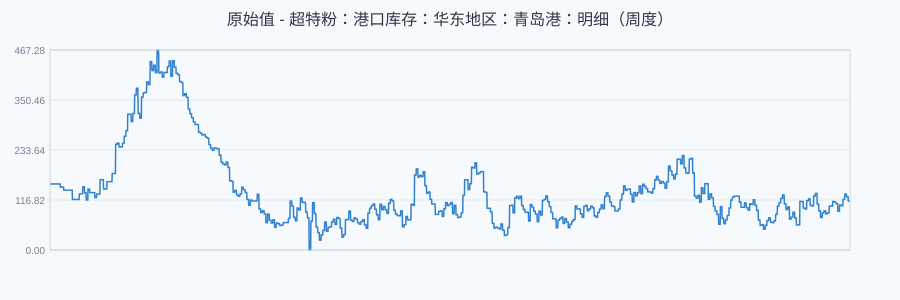
ADF t统计量: -2.4312 | 样本数: 3,242 | 均值: 138.5687
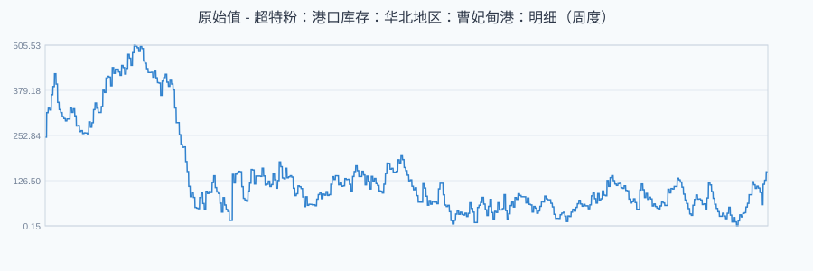
ADF t统计量: -2.1328 | 样本数: 3,242 | 均值: 140.3595
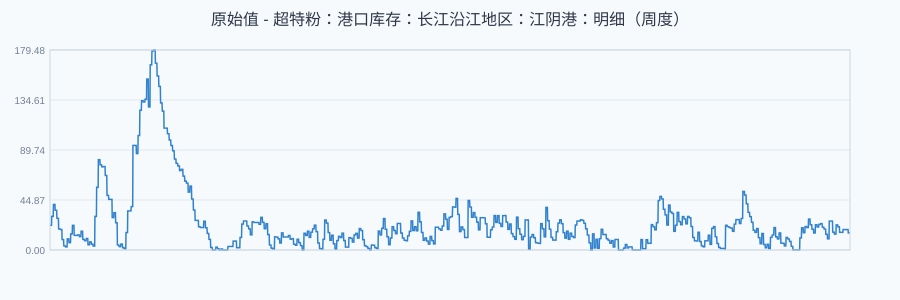
ADF t统计量: -3.2878 | 样本数: 3,242 | 均值: 23.5311
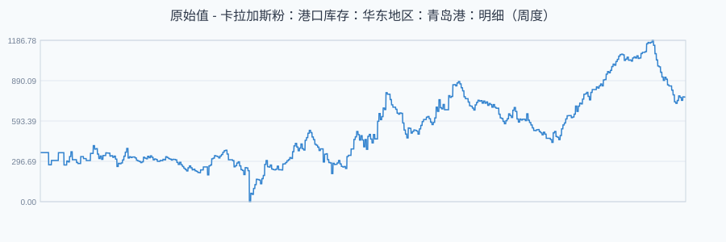
ADF t统计量: -2.5994 | 样本数: 3,242 | 均值: 519.0670
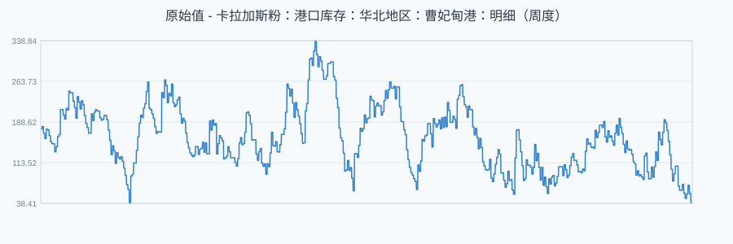
ADF t统计量: -3.8128 | 样本数: 3,242 | 均值: 160.2670
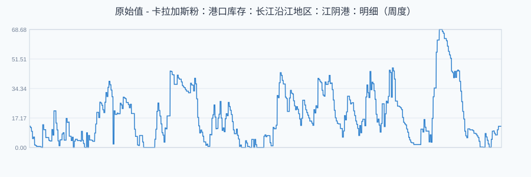
ADF t统计量: -3.6488 | 样本数: 3,242 | 均值: 17.9530
| 列ID | 列名 | 样本数 | 均值 | ADF t统计量 | 检验结果 |
|---|---|---|---|---|---|
| ID01517102 | 超特粉：港口库存：华东地区：青岛港：明细（周度） | 3,241 | -0.0124 | -28.4344 | 平稳 (99%) |
| ID01517011 | 超特粉：港口库存：华北地区：曹妃甸港：明细（周度） | 3,241 | -0.0299 | -28.4403 | 平稳 (99%) |
| ID01516873 | 超特粉：港口库存：长江沿江地区：江阴港：明细（周度） | 3,241 | -0.0021 | -28.4344 | 平稳 (99%) |
| ID01517226 | 卡拉加斯粉：港口库存：华东地区：青岛港：明细（周度） | 3,241 | 0.1261 | -28.4432 | 平稳 (99%) |
| ID01517224 | 卡拉加斯粉：港口库存：华北地区：曹妃甸港：明细（周度） | 3,241 | -0.0421 | -28.4407 | 平稳 (99%) |
| ID01517220 | 卡拉加斯粉：港口库存：长江沿江地区：江阴港：明细（周度） | 3,241 | -0.0000 | -28.4348 | 平稳 (99%) |
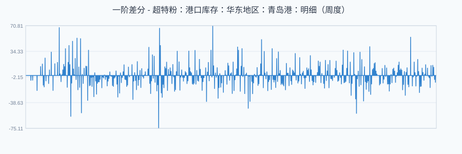
ADF t统计量: -28.4344 | 样本数: 3,241 | 均值: -0.0124
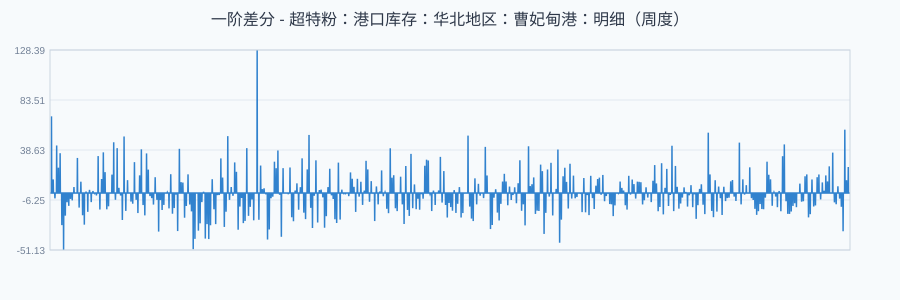
ADF t统计量: -28.4403 | 样本数: 3,241 | 均值: -0.0299
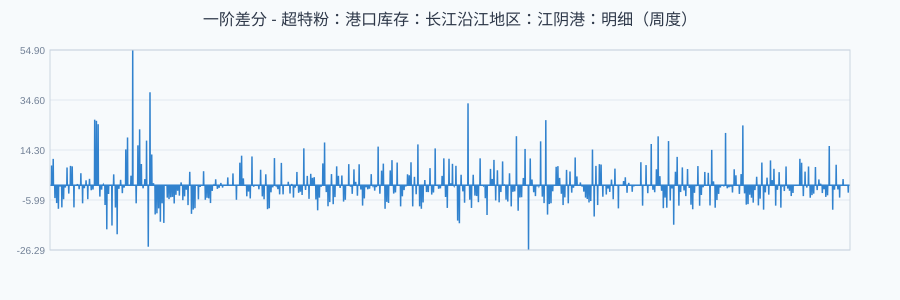
ADF t统计量: -28.4344 | 样本数: 3,241 | 均值: -0.0021
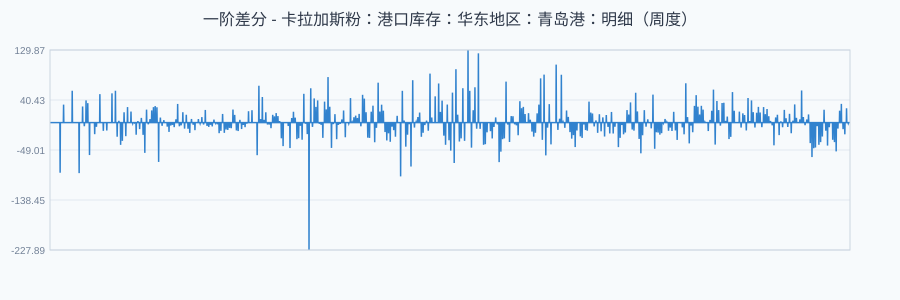
ADF t统计量: -28.4432 | 样本数: 3,241 | 均值: 0.1261
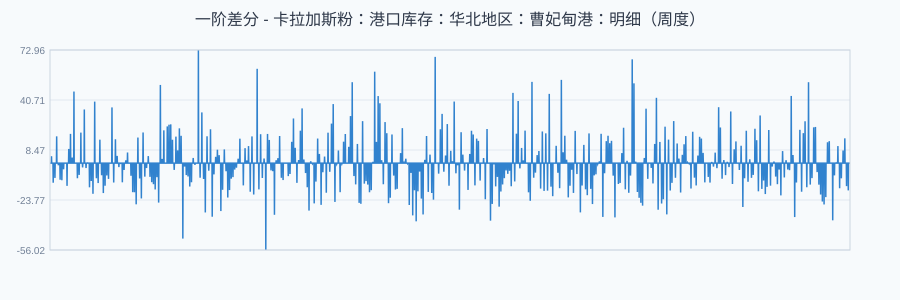
ADF t统计量: -28.4407 | 样本数: 3,241 | 均值: -0.0421
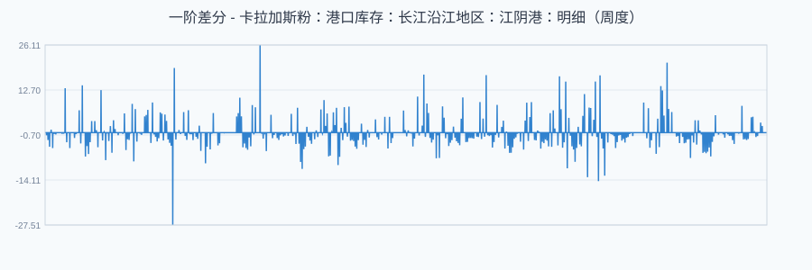
ADF t统计量: -28.4348 | 样本数: 3,241 | 均值: -0.0000
| 列ID | 列名 | 样本数 | 均值 | ADF t统计量 | 检验结果 |
|---|---|---|---|---|---|
| ID01517102 | 超特粉：港口库存：华东地区：青岛港：明细（周度） | 3,234 | 0.0017 | -28.4480 | 平稳 (99%) |
| ID01517011 | 超特粉：港口库存：华北地区：曹妃甸港：明细（周度） | 3,241 | 0.0364 | -28.5258 | 平稳 (99%) |
| ID01516873 | 超特粉：港口库存：长江沿江地区：江阴港：明细（周度） | 3,150 | 0.0869 | -28.1889 | 平稳 (99%) |
| ID01517226 | 卡拉加斯粉：港口库存：华东地区：青岛港：明细（周度） | 3,234 | 0.0008 | -28.4389 | 平稳 (99%) |
| ID01517224 | 卡拉加斯粉：港口库存：华北地区：曹妃甸港：明细（周度） | 3,241 | 0.0013 | -28.4629 | 平稳 (99%) |
| ID01517220 | 卡拉加斯粉：港口库存：长江沿江地区：江阴港：明细（周度） | 3,059 | 0.0389 | -27.7869 | 平稳 (99%) |
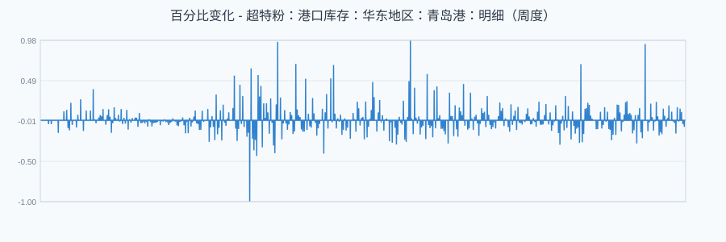
ADF t统计量: -28.4480 | 样本数: 3,234 | 均值: 0.0017
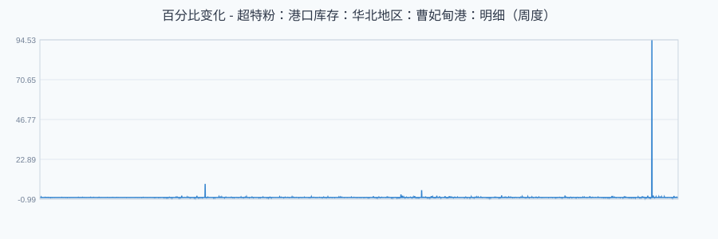
ADF t统计量: -28.5258 | 样本数: 3,241 | 均值: 0.0364
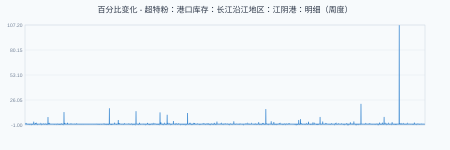
ADF t统计量: -28.1889 | 样本数: 3,150 | 均值: 0.0869
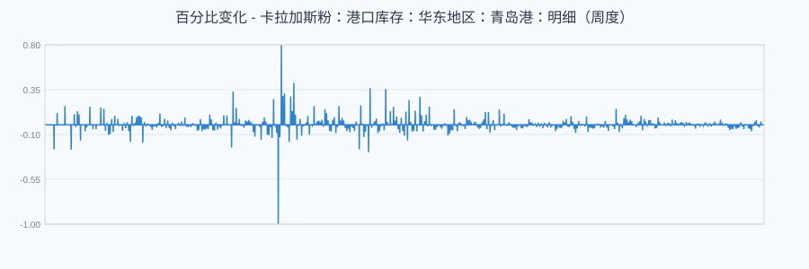
ADF t统计量: -28.4389 | 样本数: 3,234 | 均值: 0.0008
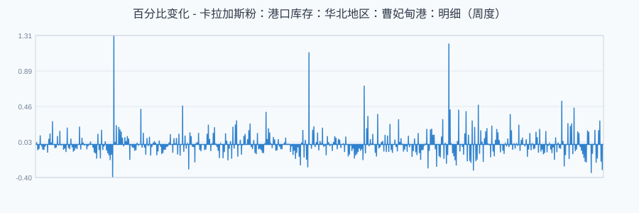
ADF t统计量: -28.4629 | 样本数: 3,241 | 均值: 0.0013
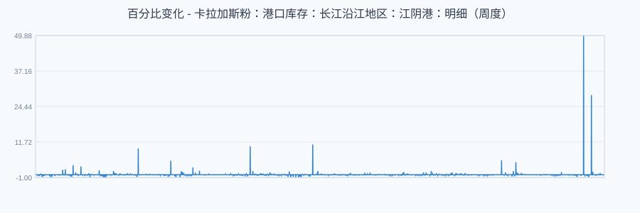
ADF t统计量: -27.7869 | 样本数: 3,059 | 均值: 0.0389